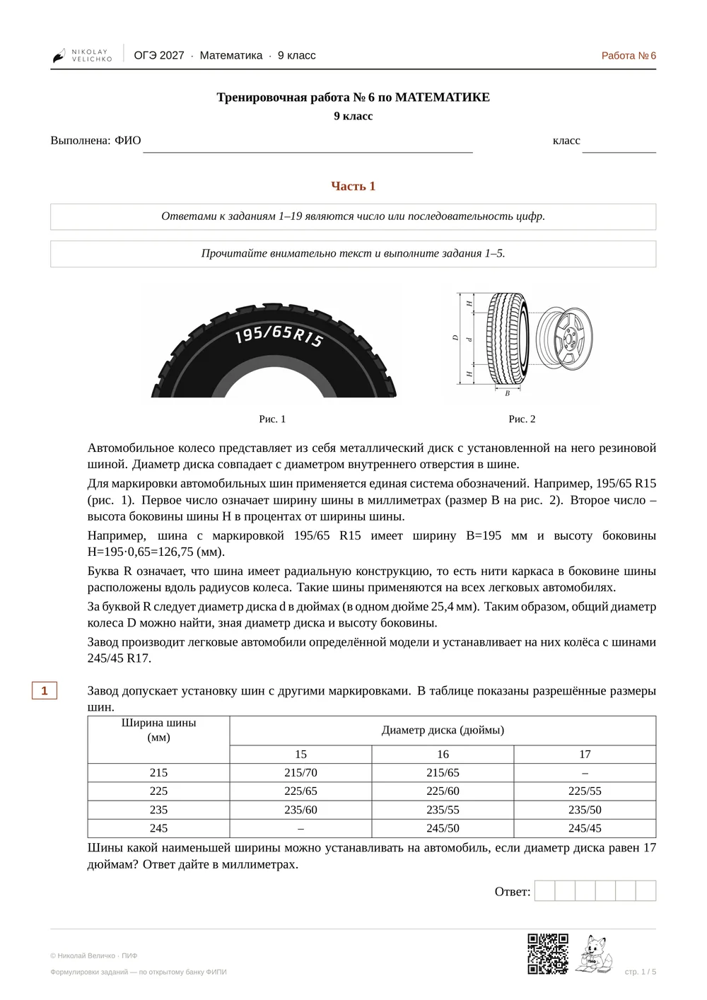
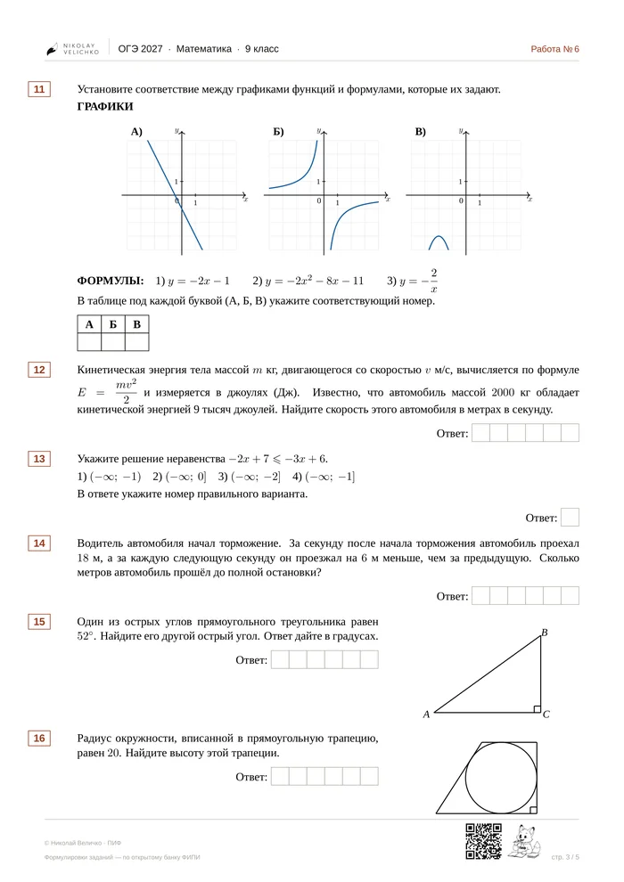
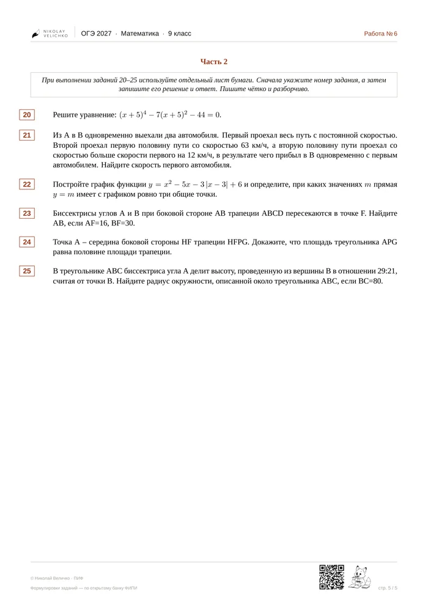
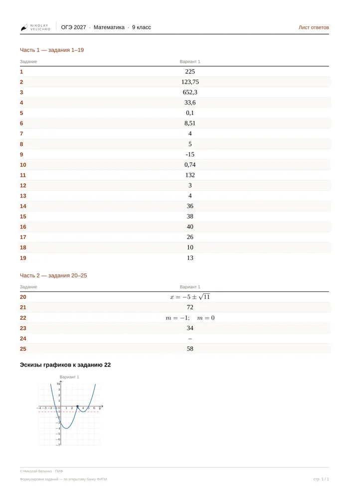

ОГЭ-2027 · математика · 9 класс
Тренировочные работы, которые не надо переделывать перед печатью
Новые прототипы ФИПИ, ответы посчитаны дважды двумя способами, вёрстка повторяет официальные материалы. Открыл, распечатал, дал классу.
Образец: работа № 6, PDF на 5 страниц, готов к печати на A4, без регистрации.
Лист ответов отдельным файлом →
Наведите курсор на страницу — покажу набор вблизи.

Что выходит каждый вторник
- 1Тренировочная работаПолный вариант, задания 1–25, обе части, бланк ответов.
- 3РазминкиКороткие карточки на 5–7 минут: блоки 6–10, 11–14, 15–19. По два варианта каждая.
- +ОтветыК разминке — сразу. К варианту — отдельным постом через неделю.
Как это выглядит на бумаге
Расстояния между заданиями, поля, положение номеров и строки «Ответ:» измерены по официальным вариантам и повторены. Ученик садится за работу, которая выглядит как экзамен, а не как распечатка из интернета.



Каждый вторник, 9:00 по Москве
Выпуски идут с 25 августа по май — весь учебный год. К концу года через класс проходит открытый банк заданий целиком.
Бесплатная версия выкладывается в сообществе ВКонтакте: один вариант, три разминки, ответы. Ничего покупать не нужно.
Август
- 25
Сентябрь
- 1
- 8
- 15
- 22
- 29
Октябрь
- 6
- 13
- 20
- 27
Ноябрь
- 3
- 10
- 17
- 24
Декабрь
- 1
- 8
- 15
- 22
- 29
Первый выпуск — 25 августа. Дальше каждый вторник; после новогодних каникул выпуски продолжаются с 12 января, календарь второго полугодия появится в декабре.
Подписка
299 ₽в месяц
Всё бесплатное плюс:
- Один вариант в четырёх исполнениях. Та же структура и те же прототипы, другие числа — четыре ряда пишут разные работы, проверяются по одному разбору.
- Ответы сразу, не через неделю.
- Файл без водяного знака и QR-кода — чистая печать.
- Навигация по всему архиву: по неделям и по номерам заданий 1–25.
Подписка открывается 1 сентября 2026 года.
Кто это делает
Вопросы
- Можно печатать и давать своему классу?
- Да, для работы с учениками — печатайте сколько нужно. Нельзя перепродавать файлы и выкладывать их как свои.
- Чем работа отличается от вариантов из сборника?
- Числа в заданиях генерируются заново, поэтому готовых решений в интернете нет — списать не получится. Прототипы при этом ровно те, что в банке ФИПИ.
- А если ФИПИ добавит новые прототипы?
- Разберу их и включу в выпуски. Работа собирается заново под каждый вторник, а не берётся из готового сборника, — поэтому новый прототип попадает в неё сразу после разбора, а не в сентябре следующего года.
- Как выдавать работу дистанционно?
- PDF загружается в электронный журнал как домашнее задание. Ученику для решения ничего, кроме файла, не нужно.
- Что делать, если в ответе ошибка?
- Напишите мне в сообществе. Ответы проверяются автоматически, но если что-то разошлось — исправлю и перевыложу файл.